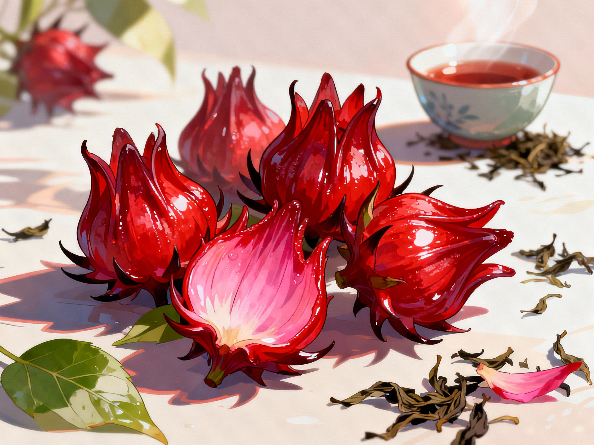

Roselle Hibiscus: Bright Color, Refreshing Taste
Roselle hibiscus is a plant known for its bright red calyces, which are often dried and used to make tangy, ruby-colored teas and drinks. In many warm regions, roselle grows well in home gardens and can be harvested near the end of the growing season.
Hibiscus tea made from roselle is naturally caffeine-free and provides small amounts of vitamin C and plant pigments called anthocyanins. These pigments give the tea its deep color and are one reason people enjoy hibiscus as part of a colorful diet.
Families sometimes serve chilled hibiscus drinks on hot days or warm tea in the evening as a simple way to relax. These traditional practices are meant for refreshment and comfort and should not be viewed as a treatment for medical conditions.
Information about roselle hibiscus and hibiscus tea comes from agricultural fact sheets and nutrition articles that discuss hibiscus as a flavorful, plant-based drink option.